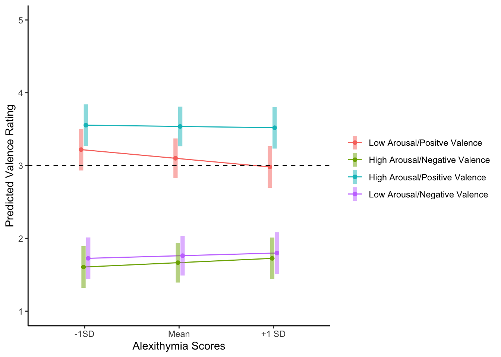
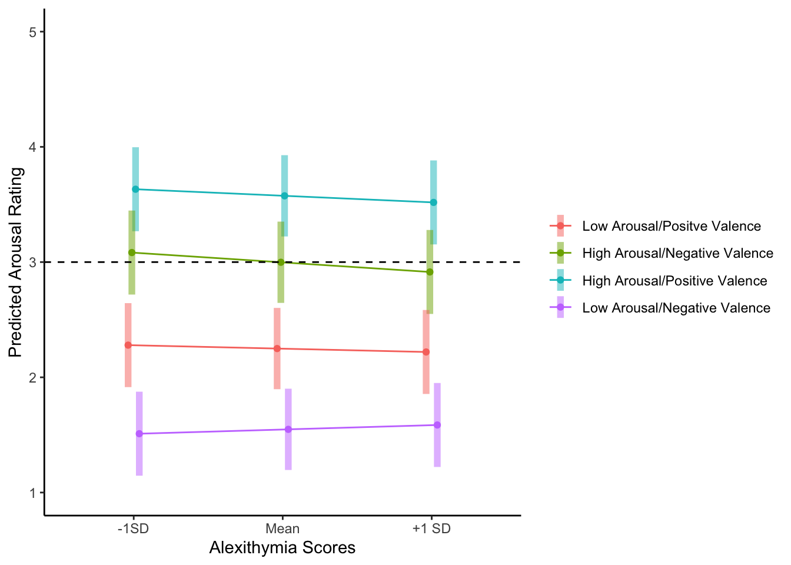

Last updated: 2019-11-20
Checks: 6 1
Knit directory: AlexithymiaMusicAffectPsychophysiology2019/
This reproducible R Markdown analysis was created with workflowr (version 1.4.0). The Checks tab describes the reproducibility checks that were applied when the results were created. The Past versions tab lists the development history.
The R Markdown file has unstaged changes. To know which version of the R Markdown file created these results, you’ll want to first commit it to the Git repo. If you’re still working on the analysis, you can ignore this warning. When you’re finished, you can run wflow_publish to commit the R Markdown file and build the HTML.
Great job! The global environment was empty. Objects defined in the global environment can affect the analysis in your R Markdown file in unknown ways. For reproduciblity it’s best to always run the code in an empty environment.
The command set.seed(20191111) was run prior to running the code in the R Markdown file. Setting a seed ensures that any results that rely on randomness, e.g. subsampling or permutations, are reproducible.
Great job! Recording the operating system, R version, and package versions is critical for reproducibility.
Nice! There were no cached chunks for this analysis, so you can be confident that you successfully produced the results during this run.
Great job! Using relative paths to the files within your workflowr project makes it easier to run your code on other machines.
Great! You are using Git for version control. Tracking code development and connecting the code version to the results is critical for reproducibility. The version displayed above was the version of the Git repository at the time these results were generated.
Note that you need to be careful to ensure that all relevant files for the analysis have been committed to Git prior to generating the results (you can use wflow_publish or wflow_git_commit). workflowr only checks the R Markdown file, but you know if there are other scripts or data files that it depends on. Below is the status of the Git repository when the results were generated:
Ignored files:
Ignored: .DS_Store
Ignored: .Rproj.user/
Ignored: Analysis/.DS_Store
Ignored: Analysis/.RData
Ignored: Analysis/.Rhistory
Ignored: Analysis/.Rproj.user/
Ignored: Analysis/data/.DS_Store
Ignored: Analysis/data/PsychoPyData/.DS_Store
Ignored: Psychopy/.DS_Store
Untracked files:
Untracked: Analysis/figure/
Unstaged changes:
Modified: Analysis/AffectRatings.rmd
Modified: Analysis/describe.rmd
Staged changes:
New: Analysis/code/Data Cleaning.Rmd
New: Analysis/code/Linear Models.Rmd
New: Analysis/data/ProcessedSurvey
New: Analysis/data/PsychoPyData/072_MusicAffectPsychophysiology2019_2019_Aug_26_1014.csv
New: Analysis/data/PsychoPyData/073_MusicAffectPsychophysiology2019_2019_Aug_26_1112.csv
New: Analysis/data/PsychoPyData/074_MusicAffectPsychophysiology2019_2019_Aug_26_1313.csv
New: Analysis/data/PsychoPyData/075_MusicAffectPsychophysiology2019_2019_Aug_26_1501.csv
New: Analysis/data/PsychoPyData/076_MusicAffectPsychophysiology2019_2019_Aug_27_0905.csv
New: Analysis/data/PsychoPyData/077_MusicAffectPsychophysiology2019_2019_Aug_27_1005.csv
New: Analysis/data/PsychoPyData/078_MusicAffectPsychophysiology2019_2019_Aug_27_1108.csv
New: Analysis/data/PsychoPyData/079_MusicAffectPsychophysiology2019_2019_Aug_27_1320.csv
New: Analysis/data/PsychoPyData/080_MusicAffectPsychophysiology2019_2019_Aug_27_1412.csv
New: Analysis/data/PsychoPyData/081_MusicAffectPsychophysiology2019_2019_Aug_27_1507.csv
New: Analysis/data/PsychoPyData/082_MusicAffectPsychophysiology2019_2019_Aug_28_0909.csv
New: Analysis/data/PsychoPyData/083_MusicAffectPsychophysiology2019_2019_Aug_28_1010.csv
New: Analysis/data/PsychoPyData/084_MusicAffectPsychophysiology2019_2019_Aug_28_1113.csv
New: Analysis/data/PsychoPyData/085_MusicAffectPsychophysiology2019_2019_Aug_28_1212.csv
New: Analysis/data/PsychoPyData/086_MusicAffectPsychophysiology2019_2019_Aug_28_1417.csv
New: Analysis/data/PsychoPyData/087_MusicAffectPsychophysiology2019_2019_Aug_28_1511.csv
New: Analysis/data/PsychoPyData/088_MusicAffectPsychophysiology2019_2019_Aug_28_1625.csv
New: Analysis/data/PsychoPyData/089_MusicAffectPsychophysiology2019_2019_Aug_29_0913.csv
New: Analysis/data/PsychoPyData/090_MusicAffectPsychophysiology2019_2019_Aug_29_1009.csv
New: Analysis/data/PsychoPyData/091_MusicAffectPsychophysiology2019_2019_Aug_29_1106.csv
New: Analysis/data/PsychoPyData/092_MusicAffectPsychophysiology2019_2019_Aug_29_1308.csv
New: Analysis/data/PsychoPyData/093_MusicAffectPsychophysiology2019_2019_Aug_29_1408.csv
New: Analysis/data/PsychoPyData/094_MusicAffectPsychophysiology2019_2019_Sep_02_0912.csv
New: Analysis/data/PsychoPyData/095_MusicAffectPsychophysiology2019_2019_Sep_02_1006.csv
New: Analysis/data/PsychoPyData/096_MusicAffectPsychophysiology2019_2019_Sep_02_1108.csv
New: Analysis/data/PsychoPyData/097_MusicAffectPsychophysiology2019_2019_Sep_02_1404.csv
New: Analysis/data/PsychoPyData/098_MusicAffectPsychophysiology2019_2019_Sep_03_1106.csv
New: Analysis/data/PsychoPyData/099_MusicAffectPsychophysiology2019_2019_Sep_03_1307.csv
New: Analysis/data/PsychoPyData/100_MusicAffectPsychophysiology2019_2019_Sep_03_1412.csv
New: Analysis/data/PsychoPyData/101_MusicAffectPsychophysiology2019_2019_Sep_04_0905.csv
New: Analysis/data/PsychoPyData/102_MusicAffectPsychophysiology2019_2019_Sep_04_1015.csv
New: Analysis/data/PsychoPyData/103_MusicAffectPsychophysiology2019_2019_Sep_04_1112.csv
New: Analysis/data/PsychoPyData/104_MusicAffectPsychophysiology2019_2019_Sep_05_0910.csv
New: Analysis/data/PsychoPyData/105_MusicAffectPsychophysiology2019_2019_Sep_05_1012.csv
New: Analysis/data/PsychoPyData/107_MusicAffectPsychophysiology2019_2019_Sep_05_1408.csv
New: Analysis/data/PsychoPyData/108_MusicAffectPsychophysiology2019_2019_Sep_05_1512.csv
New: Analysis/data/PsychoPyData/109_MusicAffectPsychophysiology2019_2019_Sep_05_1612.csv
New: Analysis/data/PsychoPyData/110_MusicAffectPsychophysiology2019_2019_Sep_10_1309.csv
New: Analysis/data/PsychoPyData/111_MusicAffectPsychophysiology2019_2019_Sep_10_1418.csv
New: Analysis/data/PsychoPyData/112_MusicAffectPsychophysiology2019_2019_Sep_11_1118.csv
New: Analysis/data/PsychoPyData/113_MusicAffectPsychophysiology2019_2019_Sep_11_1516.csv
New: Analysis/data/PsychoPyData/114_MusicAffectPsychophysiology2019_2019_Sep_19_1009.csv
New: Analysis/data/PsychoPyData/115_MusicAffectPsychophysiology2019_2019_Sep_23_1011.csv
New: Analysis/data/PsychoPyData/116_MusicAffectPsychophysiology2019_2019_Sep_26_1115.csv
New: Analysis/data/PsychoPyData/117_MusicAffectPsychophysiology2019_2019_Sep_26_1411.csv
New: Analysis/data/PsychoPyData/118_MusicAffectPsychophysiology2019_2019_Sep_26_1458.csv
New: Analysis/data/PsychoPyData/119_MusicAffectPsychophysiology2019_2019_Sep_26_1712.csv
New: Analysis/data/survey_13_9_19.csv
New: Analysis/data/survey_27_9_19.csv
New: Analysis/install.R
Modified: Archives/Novembe Analysis ARCHIVE/code/Differentiation.Rmd
Modified: Archives/Novembe Analysis ARCHIVE/dataPsychoPyProcessed.csv
Modified: Archives/Novembe Analysis ARCHIVE/results/DiffCorrelations.rtf
Note that any generated files, e.g. HTML, png, CSS, etc., are not included in this status report because it is ok for generated content to have uncommitted changes.
These are the previous versions of the R Markdown and HTML files. If you’ve configured a remote Git repository (see ?wflow_git_remote), click on the hyperlinks in the table below to view them.
| File | Version | Author | Date | Message |
|---|---|---|---|---|
| html | 492e776 | Joel Larwood | 2019-11-15 | update layout |
| html | 7112720 | joellarwood | 2019-11-14 | Build site. |
| rmd | 20bc296 | joellarwood | 2019-11-14 | workflowr deploy |
| html | 20bc296 | joellarwood | 2019-11-14 | workflowr deploy |
For all analyses the fixed effect of Postive Valence and Low Arousal (or tender emotion) was the referent category.
knitr::opts_chunk$set(warning = FALSE, message = FALSE)
library(tidyverse)
library("sjPlot")
library("lmerTest")
library("interactions")
library(here)
selfreport <- read_csv(here::here("data", "PsychoPyProcessed.csv")) %>%
rename(ValenceRating = valencekey.keys,
ArousalRating = arousalkey.keys,
LikingRating = likekey.keys) %>%
mutate(affectcat = fct_relevel(affectcat, "Low Arousal/Positve Valence"),
id = factor(id), #id as factor
songmark = factor(songmark))People high in alexithymia will judge their experience of valence as more neutral for negative but not positively valenced music.
From the table below we can see that there is a significant effect of alexithymia for songs that were positively valenced and negative in arousal. With higher ratings of alexithymia predicting more neutral ratings of experienced valence. This is not consistent with our predictions and can also be seen in the plot below
ValenceSelfConfirmRaw <- lmer(ValenceRating ~ affectcat*TAS + (1 | id) + (1|affectcat:songmark), data =selfreport)
tab_model(ValenceSelfConfirmRaw, show.std = "std")| Valence Rating | |||||
|---|---|---|---|---|---|
| Predictors | Estimates | std. Beta | CI | standardized CI | p |
| (Intercept) | 3.67 | 3.14 – 4.21 | <0.001 | ||
|
High Arousal/Negative Valence |
-2.29 | -0.78 | -2.79 – -1.80 | -0.95 – -0.61 | <0.001 |
|
High Arousal/Positive Valence |
-0.05 | -0.02 | -0.55 – 0.44 | -0.19 – 0.15 | 0.839 |
|
Low Arousal/Negative Valence |
-2.09 | -0.71 | -2.58 – -1.59 | -0.88 – -0.54 | <0.001 |
| TAS | -0.01 | -0.09 | -0.02 – -0.00 | -0.17 – -0.02 | 0.019 |
| affectcatHigh Arousal/Negative Valence:TAS | 0.02 | 0.30 | 0.01 – 0.02 | 0.17 – 0.43 | <0.001 |
| affectcatHigh Arousal/Positive Valence:TAS | 0.01 | 0.17 | 0.00 – 0.02 | 0.04 – 0.30 | 0.008 |
| affectcatLow Arousal/Negative Valence:TAS | 0.01 | 0.26 | 0.01 – 0.02 | 0.13 – 0.39 | <0.001 |
| Random Effects | |||||
| σ2 | 0.70 | ||||
| τ00 id | 0.21 | ||||
| τ00 affectcat:songmark | 0.06 | ||||
| ICC | 0.28 | ||||
| N id | 119 | ||||
| N affectcat | 4 | ||||
| N songmark | 16 | ||||
| Observations | 3762 | ||||
| Marginal R2 / Conditional R2 | 0.411 / 0.574 | ||||
minusTAS <- mean(selfreport$TAS, na.rm = TRUE)-sd(selfreport$TAS, na.rm = TRUE)
plusTAS <- mean(selfreport$TAS, na.rm = TRUE)+sd(selfreport$TAS, na.rm = TRUE)
meanTAS <- mean(selfreport$TAS, na.rm = TRUE)emmeans::emm_options(lmerTest.limit = 4000,
pbkrtest.limit = 4000) # allow df calculations
ValenceConfirmGridRaw <- emmeans::ref_grid(ValenceSelfConfirmRaw,
at = list(TAS = c(minusTAS, meanTAS, plusTAS), # have alexithymia values for +/-1 SD
affectcat = c("Low Arousal/Positve Valence",
"High Arousal/Negative Valence",
"High Arousal/Positive Valence",
"Low Arousal/Negative Valence")))
ValenceConfirmGridRaw'emmGrid' object with variables:
affectcat = Low Arousal/Positve Valence, High Arousal/Negative Valence, High Arousal/Positive Valence, Low Arousal/Negative Valence
TAS = 39.837, 50.277, 60.718emmeans::emmip(ValenceConfirmGridRaw,
affectcat~TAS,
CIs = TRUE,
xlab = "Alexithymia Scores",
ylab = "Predicted Valence Rating") +
ggplot2::theme_classic() +
ggplot2::theme(legend.title = element_blank()) +
ggplot2::scale_fill_viridis_c() +
ggplot2::ylim(c(1,5)) +
ggplot2::geom_hline(yintercept = 3, linetype = "dashed") +
ggplot2::scale_x_discrete(labels = c("-1SD", "Mean", "+1 SD"))
| Version | Author | Date |
|---|---|---|
| 20bc296 | joellarwood | 2019-11-14 |
In the table of slopes below it is evidenct that alexithymia only related to ratings of experienced valence when the song is positively valenced and low in arousal.
ValenceConfirmSlopesRaw <- emmeans::emtrends(ValenceSelfConfirmRaw,
specs = "affectcat",
var = "TAS") # calculates trend of alexithymia at each level of affectcat
knitr::kable(ValenceConfirmSlopesRaw, format = "html", digits = 3)| affectcat | TAS.trend | SE | df | lower.CL | upper.CL |
|---|---|---|---|---|---|
| Low Arousal/Positve Valence | -0.011 | 0.005 | 190.909 | -0.021 | -0.002 |
| High Arousal/Negative Valence | 0.006 | 0.005 | 190.993 | -0.004 | 0.015 |
| High Arousal/Positive Valence | -0.002 | 0.005 | 190.857 | -0.011 | 0.008 |
| Low Arousal/Negative Valence | 0.003 | 0.005 | 190.808 | -0.006 | 0.013 |
The contrast of the slopes shows that the slopes for all other fixed effects are not differnt to each otehr (but are all different to the slope for postively valenced songs that are low in arousal.
knitr::kable(pairs(ValenceConfirmSlopesRaw))| contrast | estimate | SE | df | t.ratio | p.value |
|---|---|---|---|---|---|
| Low Arousal/Positve Valence - High Arousal/Negative Valence | -0.0171084 | 0.0036902 | 3625.047 | -4.6361812 | 0.0000218 |
| Low Arousal/Positve Valence - High Arousal/Positive Valence | -0.0097269 | 0.0036890 | 3625.035 | -2.6367225 | 0.0418156 |
| Low Arousal/Positve Valence - Low Arousal/Negative Valence | -0.0148909 | 0.0036890 | 3625.175 | -4.0366146 | 0.0003226 |
| High Arousal/Negative Valence - High Arousal/Positive Valence | 0.0073815 | 0.0036898 | 3625.045 | 2.0005065 | 0.1879180 |
| High Arousal/Negative Valence - Low Arousal/Negative Valence | 0.0022175 | 0.0036895 | 3625.076 | 0.6010296 | 0.9317563 |
| High Arousal/Positive Valence - Low Arousal/Negative Valence | -0.0051640 | 0.0036885 | 3625.112 | -1.4000400 | 0.4993568 |
The model presented as confrimatory did not include potential covairates of liking of a song and of depression scores. Here I build models that add the liking by afectcat and depression by affectcat terms. The comparion of the models shows that the best fitting model includes the term for the liking of each song.
ValenceSelfPlusLiking <- lmer(ValenceRating ~ affectcat*TAS + affectcat*LikingRating + (1 | id) + (1|affectcat:songmark), data =drop_na(selfreport))
ValenceSelfPlusDep <- lmer(ValenceRating ~ affectcat*TAS + affectcat*depression + (1 | id) + (1|affectcat:songmark), data =drop_na(selfreport))
ValenceSelfPlusLikingPLusDep <- lmer(ValenceRating ~ affectcat*TAS + affectcat*LikingRating + affectcat*depression + (1 | id) + (1|affectcat:songmark), data =drop_na(selfreport))
knitr::kable(anova(ValenceSelfPlusDep, ValenceSelfPlusLiking, ValenceSelfPlusLikingPLusDep), format = "html")| Df | AIC | BIC | logLik | deviance | Chisq | Chi Df | Pr(>Chisq) | |
|---|---|---|---|---|---|---|---|---|
| ValenceSelfPlusDep | 15 | 8831.256 | 8923.413 | -4400.628 | 8801.256 | NA | NA | NA |
| ValenceSelfPlusLiking | 15 | 7180.560 | 7272.717 | -3575.280 | 7150.560 | 1650.696164 | 0 | 0.0000000 |
| ValenceSelfPlusLikingPLusDep | 19 | 7179.841 | 7296.574 | -3570.921 | 7141.841 | 8.718672 | 4 | 0.0685292 |
The model that included liking also fit the data better than the hypothesised model
SubsetValenceReg <- lmer(ValenceRating ~ affectcat*TAS + (1 | id) + (1|affectcat:songmark), data =drop_na(selfreport))
knitr::kable(anova(SubsetValenceReg,
ValenceSelfPlusLiking), format = "html", digits = 3)| Df | AIC | BIC | logLik | deviance | Chisq | Chi Df | Pr(>Chisq) | |
|---|---|---|---|---|---|---|---|---|
| SubsetValenceReg | 11 | 8845.185 | 8912.767 | -4411.593 | 8823.185 | NA | NA | NA |
| ValenceSelfPlusLiking | 15 | 7180.560 | 7272.717 | -3575.280 | 7150.560 | 1672.625 | 4 | 0 |
Here both models can be seen side by side. The second model is the model that included how much each song was liked. This model indicated that alexithymia predicted reduced experienced valence when the song was positive and low in arousal. However, this slope was only significantly different to the slopes for negatively valenced songs.
sjPlot::tab_model(SubsetValenceReg,
ValenceSelfPlusLiking,
show.std = "std")| Valence Rating | Valence Rating | |||||||||
|---|---|---|---|---|---|---|---|---|---|---|
| Predictors | Estimates | std. Beta | CI | standardized CI | p | Estimates | std. Beta | CI | standardized CI | p |
| (Intercept) | 3.69 | 3.13 – 4.25 | <0.001 | 1.27 | 0.89 – 1.65 | <0.001 | ||||
|
High Arousal/Negative Valence |
-2.45 | -0.84 | -2.96 – -1.94 | -1.01 – -0.66 | <0.001 | -0.74 | -0.25 | -1.12 – -0.35 | -0.38 – -0.12 | <0.001 |
|
High Arousal/Positive Valence |
-0.09 | -0.03 | -0.59 – 0.42 | -0.20 – 0.14 | 0.739 | 0.43 | 0.15 | 0.03 – 0.83 | 0.01 – 0.28 | 0.034 |
|
Low Arousal/Negative Valence |
-2.22 | -0.76 | -2.72 – -1.71 | -0.93 – -0.58 | <0.001 | -0.74 | -0.25 | -1.13 – -0.35 | -0.38 – -0.12 | <0.001 |
| TAS | -0.01 | -0.10 | -0.02 – -0.00 | -0.18 – -0.02 | 0.016 | -0.01 | -0.06 | -0.01 – -0.00 | -0.11 – -0.01 | 0.030 |
| affectcatHigh Arousal/Negative Valence:TAS | 0.02 | 0.37 | 0.01 – 0.03 | 0.23 – 0.50 | <0.001 | 0.01 | 0.21 | 0.01 – 0.02 | 0.10 – 0.32 | <0.001 |
| affectcatHigh Arousal/Positive Valence:TAS | 0.01 | 0.19 | 0.00 – 0.02 | 0.06 – 0.32 | 0.005 | 0.00 | 0.03 | -0.00 – 0.01 | -0.07 – 0.14 | 0.546 |
| affectcatLow Arousal/Negative Valence:TAS | 0.02 | 0.32 | 0.01 – 0.03 | 0.18 – 0.45 | <0.001 | 0.01 | 0.18 | 0.00 – 0.02 | 0.08 – 0.29 | 0.001 |
| Liking Rating | 0.72 | 0.67 | 0.68 – 0.77 | 0.63 – 0.71 | <0.001 | |||||
| affectcatHigh Arousal/Negative Valence:LikingRating | -0.28 | -0.22 | -0.34 – -0.22 | -0.27 – -0.17 | <0.001 | |||||
| affectcatHigh Arousal/Positive Valence:LikingRating | -0.07 | -0.08 | -0.12 – -0.01 | -0.14 – -0.01 | 0.032 | |||||
| affectcatLow Arousal/Negative Valence:LikingRating | -0.29 | -0.27 | -0.35 – -0.23 | -0.33 – -0.21 | <0.001 | |||||
| Random Effects | ||||||||||
| σ2 | 0.70 | 0.44 | ||||||||
| τ00 | 0.22 id | 0.07 id | ||||||||
| 0.06 affectcat:songmark | 0.02 affectcat:songmark | |||||||||
| ICC | 0.28 | 0.16 | ||||||||
| N | 109 id | 109 id | ||||||||
| 4 affectcat | 4 affectcat | |||||||||
| 16 songmark | 16 songmark | |||||||||
| Observations | 3442 | 3442 | ||||||||
| Marginal R2 / Conditional R2 | 0.405 / 0.573 | 0.669 / 0.722 | ||||||||
Despite the interaction, alexithymia only related to ratings of experienced valence when the song is positively valenced and low in arousal.
ValenceExploreSlopes <- emmeans::emtrends(ValenceSelfPlusLiking, var = "TAS", specs = "affectcat")
summary(ValenceExploreSlopes) affectcat TAS.trend SE df lower.CL upper.CL
Low Arousal/Positve Valence -0.00707 0.00325 238 -0.01346 -0.000671
High Arousal/Negative Valence 0.00485 0.00325 239 -0.00155 0.011249
High Arousal/Positive Valence -0.00522 0.00324 238 -0.01161 0.001174
Low Arousal/Negative Valence 0.00333 0.00324 238 -0.00306 0.009716
Degrees-of-freedom method: kenward-roger
Confidence level used: 0.95 The pairwise comparison of slopes adds more fidelity to the interaction. They indicate that the slopes for positvley valenced songs did not differ from eachother but that both postively valenced songs that were high in arousal and positively valenced songs that were low in arousal were significantly different to the slopes of the songs that were negatively valenced.
knitr::kable(pairs(ValenceExploreSlopes), type = "html", digits = 3)| contrast | estimate | SE | df | t.ratio | p.value |
|---|---|---|---|---|---|
| Low Arousal/Positve Valence - High Arousal/Negative Valence | -0.012 | 0.003 | 3313.449 | -3.888 | 0.001 |
| Low Arousal/Positve Valence - High Arousal/Positive Valence | -0.002 | 0.003 | 3312.854 | -0.604 | 0.931 |
| Low Arousal/Positve Valence - Low Arousal/Negative Valence | -0.010 | 0.003 | 3313.105 | -3.395 | 0.004 |
| High Arousal/Negative Valence - High Arousal/Positive Valence | 0.010 | 0.003 | 3311.718 | 3.289 | 0.006 |
| High Arousal/Negative Valence - Low Arousal/Negative Valence | 0.002 | 0.003 | 3311.754 | 0.498 | 0.959 |
| High Arousal/Positive Valence - Low Arousal/Negative Valence | -0.009 | 0.003 | 3311.506 | -2.794 | 0.027 |
People high in alexithymia will have judge thier experience of arousal as more neutral when the music is positively valenced but not when it is negatively valenced
From the table below it can be seen that alexithymia did not relate to self-reports of experienced arousal for songs that were positively valenced and low in arousal. It is also seen that the slopes of the other song catergries did not differ from the slope for positively valenced and low arousal songs. The slopes can also be seen in the plot below.]
ArousalSelfConfirmRaw <- lmer(ArousalRating ~ affectcat*TAS + (1 | id) + (1|affectcat:songmark), data =selfreport)
tab_model(ArousalSelfConfirmRaw, show.std = "std")| Arousal Rating | |||||
|---|---|---|---|---|---|
| Predictors | Estimates | std. Beta | CI | standardized CI | p |
| (Intercept) | 2.39 | 1.80 – 2.99 | <0.001 | ||
|
High Arousal/Negative Valence |
1.01 | 0.36 | 0.46 – 1.56 | 0.16 – 0.55 | 0.001 |
|
High Arousal/Positive Valence |
1.46 | 0.51 | 0.90 – 2.01 | 0.32 – 0.71 | <0.001 |
|
Low Arousal/Negative Valence |
-1.03 | -0.36 | -1.58 – -0.47 | -0.56 – -0.17 | 0.001 |
| TAS | -0.00 | -0.02 | -0.01 – 0.01 | -0.11 – 0.06 | 0.574 |
| affectcatHigh Arousal/Negative Valence:TAS | -0.01 | -0.10 | -0.01 – 0.00 | -0.22 – 0.03 | 0.129 |
| affectcatHigh Arousal/Positive Valence:TAS | -0.00 | -0.05 | -0.01 – 0.00 | -0.17 – 0.07 | 0.443 |
| affectcatLow Arousal/Negative Valence:TAS | 0.01 | 0.12 | -0.00 – 0.01 | -0.00 – 0.24 | 0.060 |
| Random Effects | |||||
| σ2 | 0.60 | ||||
| τ00 id | 0.25 | ||||
| τ00 affectcat:songmark | 0.10 | ||||
| ICC | 0.37 | ||||
| N id | 119 | ||||
| N affectcat | 4 | ||||
| N songmark | 16 | ||||
| Observations | 3762 | ||||
| Marginal R2 / Conditional R2 | 0.381 / 0.608 | ||||
emmeans::emm_options(lmerTest.limit = 4000,
pbkrtest.limit = 4000) # allow df calculations
ArousalConfirmGridRaw <- emmeans::ref_grid(ArousalSelfConfirmRaw,
at = list(TAS = c(minusTAS, meanTAS, plusTAS), # have alexithymia values for +/-1 SD
affectcat = c("Low Arousal/Positve Valence",
"High Arousal/Negative Valence",
"High Arousal/Positive Valence",
"Low Arousal/Negative Valence")))
emmeans::emmip(ArousalConfirmGridRaw,
affectcat~TAS,
CIs = TRUE,
xlab = "Alexithymia Scores",
ylab = "Predicted Arousal Rating"
) +
ggplot2::theme_classic() +
ggplot2::theme(legend.title = element_blank()) +
ggplot2::scale_fill_viridis_c() +
ggplot2::ylim(c(1,5)) +
ggplot2::geom_hline(yintercept = 3, linetype = "dashed") +
ggplot2::scale_x_discrete(labels = c("-1SD", "Mean", "+1 SD"))
| Version | Author | Date |
|---|---|---|
| 20bc296 | joellarwood | 2019-11-14 |
The table of slopes also indicates that alexithymia did not relate to experiences of arousal for any of the songs.
ArousalConfirmSlopesRaw <- emmeans::emtrends(ArousalSelfConfirmRaw,
specs = "affectcat",
var = "TAS")
knitr::kable(ArousalConfirmSlopesRaw, format = "html", digits = 3)| affectcat | TAS.trend | SE | df | lower.CL | upper.CL |
|---|---|---|---|---|---|
| Low Arousal/Positve Valence | -0.003 | 0.005 | 170.559 | -0.013 | 0.007 |
| High Arousal/Negative Valence | -0.008 | 0.005 | 170.619 | -0.018 | 0.002 |
| High Arousal/Positive Valence | -0.005 | 0.005 | 170.522 | -0.015 | 0.005 |
| Low Arousal/Negative Valence | 0.004 | 0.005 | 170.487 | -0.006 | 0.014 |
From the slopes we see that alexithymia is not relating to experienced arousal for any song type. Given this the pairwise comparions are of little importance but presented for interest (and show that the only difference in slopes was between negatively valenced songs)
knitr::kable(pairs(ArousalConfirmSlopesRaw), format = "html", digits = 3)| contrast | estimate | SE | df | t.ratio | p.value |
|---|---|---|---|---|---|
| Low Arousal/Positve Valence - High Arousal/Negative Valence | 0.005 | 0.003 | 3625.034 | 1.519 | 0.426 |
| Low Arousal/Positve Valence - High Arousal/Positive Valence | 0.003 | 0.003 | 3625.026 | 0.767 | 0.869 |
| Low Arousal/Positve Valence - Low Arousal/Negative Valence | -0.006 | 0.003 | 3625.131 | -1.883 | 0.235 |
| High Arousal/Negative Valence - High Arousal/Positive Valence | -0.003 | 0.003 | 3625.032 | -0.752 | 0.876 |
| High Arousal/Negative Valence - Low Arousal/Negative Valence | -0.012 | 0.003 | 3625.056 | -3.402 | 0.004 |
| High Arousal/Positive Valence - Low Arousal/Negative Valence | -0.009 | 0.003 | 3625.083 | -2.651 | 0.040 |
The model presented as confrimatory did not include potential covairates of liking of a song and of depression scores. Here I build models that add the liking by afectcat and depression by affectcat terms when predicted experienced arousal
ArousalSelfPlusLiking <- lmer(ArousalRating ~ affectcat*TAS + affectcat*LikingRating + (1 | id) + (1|affectcat:songmark), data =drop_na(selfreport))
ArousalSelfPlusDep <- lmer(ArousalRating ~ affectcat*TAS + affectcat*depression + (1 | id) + (1|affectcat:songmark), data =drop_na(selfreport))
ArousalSelfPlusLikingPLusDep <- lmer(ArousalRating ~ affectcat*TAS + affectcat*LikingRating + affectcat*depression + (1 | id) + (1|affectcat:songmark), data =drop_na(selfreport))
knitr::kable(anova(ArousalSelfPlusDep, ArousalSelfPlusLiking, ArousalSelfPlusLikingPLusDep),
format = "html",
digits = 3)| Df | AIC | BIC | logLik | deviance | Chisq | Chi Df | Pr(>Chisq) | |
|---|---|---|---|---|---|---|---|---|
| ArousalSelfPlusDep | 15 | 8385.168 | 8477.325 | -4177.584 | 8355.168 | NA | NA | NA |
| ArousalSelfPlusLiking | 15 | 7769.258 | 7861.415 | -3869.629 | 7739.258 | 615.910 | 0 | 0.000 |
| ArousalSelfPlusLikingPLusDep | 19 | 7771.002 | 7887.735 | -3866.501 | 7733.002 | 6.256 | 4 | 0.181 |
The comparison of models indicates that the best model is the one that includes the liking of the song covariate. Data for liking is not available for all participants but below I compare the models with and without liking.
As can be seen blow the model with liking is preferred
SubsetArousalReg <- lmer(ArousalRating ~ affectcat*TAS + (1 | id) + (1|affectcat:songmark), data =drop_na(selfreport))
knitr::kable(anova(SubsetArousalReg,
ArousalSelfPlusLiking), format = "html", digits = 3)| Df | AIC | BIC | logLik | deviance | Chisq | Chi Df | Pr(>Chisq) | |
|---|---|---|---|---|---|---|---|---|
| SubsetArousalReg | 11 | 8377.468 | 8445.050 | -4177.734 | 8355.468 | NA | NA | NA |
| ArousalSelfPlusLiking | 15 | 7769.258 | 7861.415 | -3869.629 | 7739.258 | 616.21 | 4 | 0 |
Here both models can be seen side by side. In the model that includes liking an interaction is present. The model terms indicate no effect of alexithymia on ratings of arousal for songs that were positively valenced and low in arousal. However, the slopes for songs that were high in arousal were significantly differnent to the slope when song were positively valenced and low in arousal
sjPlot::tab_model(SubsetArousalReg,
ArousalSelfPlusLiking, show.std = "std")| Arousal Rating | Arousal Rating | |||||||||
|---|---|---|---|---|---|---|---|---|---|---|
| Predictors | Estimates | std. Beta | CI | standardized CI | p | Estimates | std. Beta | CI | standardized CI | p |
| (Intercept) | 2.38 | 1.77 – 3.00 | <0.001 | 1.30 | 0.77 – 1.84 | <0.001 | ||||
|
High Arousal/Negative Valence |
0.97 | 0.34 | 0.41 – 1.53 | 0.14 – 0.54 | 0.002 | 1.56 | 0.55 | 1.03 – 2.10 | 0.36 – 0.74 | <0.001 |
|
High Arousal/Positive Valence |
1.53 | 0.54 | 0.96 – 2.09 | 0.34 – 0.74 | <0.001 | 1.19 | 0.42 | 0.64 – 1.73 | 0.23 – 0.61 | <0.001 |
|
Low Arousal/Negative Valence |
-1.07 | -0.38 | -1.63 – -0.51 | -0.58 – -0.18 | 0.001 | -0.49 | -0.17 | -1.03 – 0.05 | -0.37 – 0.02 | 0.080 |
| TAS | -0.00 | -0.02 | -0.01 – 0.01 | -0.11 – 0.07 | 0.631 | -0.00 | -0.00 | -0.01 – 0.01 | -0.07 – 0.07 | 0.965 |
| affectcatHigh Arousal/Negative Valence:TAS | -0.00 | -0.08 | -0.01 – 0.00 | -0.21 – 0.05 | 0.202 | -0.01 | -0.17 | -0.02 – -0.00 | -0.29 – -0.05 | 0.005 |
| affectcatHigh Arousal/Positive Valence:TAS | -0.00 | -0.08 | -0.01 – 0.00 | -0.21 – 0.04 | 0.203 | -0.01 | -0.18 | -0.02 – -0.00 | -0.29 – -0.06 | 0.004 |
| affectcatLow Arousal/Negative Valence:TAS | 0.01 | 0.14 | 0.00 – 0.01 | 0.01 – 0.27 | 0.037 | 0.00 | 0.07 | -0.00 – 0.01 | -0.05 – 0.19 | 0.235 |
| Liking Rating | 0.32 | 0.31 | 0.28 – 0.37 | 0.27 – 0.36 | <0.001 | |||||
| affectcatHigh Arousal/Negative Valence:LikingRating | -0.01 | -0.01 | -0.08 – 0.05 | -0.07 – 0.04 | 0.658 | |||||
| affectcatHigh Arousal/Positive Valence:LikingRating | 0.17 | 0.20 | 0.10 – 0.23 | 0.13 – 0.28 | <0.001 | |||||
| affectcatLow Arousal/Negative Valence:LikingRating | -0.09 | -0.09 | -0.16 – -0.03 | -0.15 – -0.03 | 0.005 | |||||
| Random Effects | ||||||||||
| σ2 | 0.60 | 0.51 | ||||||||
| τ00 | 0.26 id | 0.16 id | ||||||||
| 0.10 affectcat:songmark | 0.08 affectcat:songmark | |||||||||
| ICC | 0.37 | 0.31 | ||||||||
| N | 109 id | 109 id | ||||||||
| 4 affectcat | 4 affectcat | |||||||||
| 16 songmark | 16 songmark | |||||||||
| Observations | 3442 | 3442 | ||||||||
| Marginal R2 / Conditional R2 | 0.374 / 0.605 | 0.491 / 0.651 | ||||||||
The slopes indicate that increased alexithymia predicted reduced self-reported experience of arousal when the arousal of the song was high. There was no relationship between alexithymia and low arousal songs
ArousalExploreSlopes <- emmeans::emtrends(ArousalSelfPlusLiking, var = "TAS", specs = "affectcat")
knitr::kable(summary(ArousalExploreSlopes), format = "html", digits = 3)| affectcat | TAS.trend | SE | df | lower.CL | upper.CL |
|---|---|---|---|---|---|
| Low Arousal/Positve Valence | 0.000 | 0.004 | 174.141 | -0.009 | 0.008 |
| High Arousal/Negative Valence | -0.010 | 0.004 | 174.330 | -0.018 | -0.001 |
| High Arousal/Positive Valence | -0.010 | 0.004 | 173.813 | -0.018 | -0.001 |
| Low Arousal/Negative Valence | 0.004 | 0.004 | 173.784 | -0.005 | 0.012 |
Finally, the pairwise comparions of slopes indicates that the slopes for high arousal songs were equivalent to each other and steeper than the slopes for all low arousal comparions.
knitr::kable(pairs(ArousalExploreSlopes), format = "html", digits = 3)| contrast | estimate | SE | df | t.ratio | p.value |
|---|---|---|---|---|---|
| Low Arousal/Positve Valence - High Arousal/Negative Valence | 0.009 | 0.003 | 3312.396 | 2.825 | 0.025 |
| Low Arousal/Positve Valence - High Arousal/Positive Valence | 0.010 | 0.003 | 3312.057 | 2.907 | 0.019 |
| Low Arousal/Positve Valence - Low Arousal/Negative Valence | -0.004 | 0.003 | 3312.211 | -1.188 | 0.635 |
| High Arousal/Negative Valence - High Arousal/Positive Valence | 0.000 | 0.003 | 3311.348 | 0.078 | 1.000 |
| High Arousal/Negative Valence - Low Arousal/Negative Valence | -0.013 | 0.003 | 3311.379 | -4.017 | 0.000 |
| High Arousal/Positive Valence - Low Arousal/Negative Valence | -0.013 | 0.003 | 3311.254 | -4.099 | 0.000 |
sessionInfo()R version 3.6.1 (2019-07-05)
Platform: x86_64-apple-darwin15.6.0 (64-bit)
Running under: macOS Mojave 10.14.6
Matrix products: default
BLAS: /Library/Frameworks/R.framework/Versions/3.6/Resources/lib/libRblas.0.dylib
LAPACK: /Library/Frameworks/R.framework/Versions/3.6/Resources/lib/libRlapack.dylib
locale:
[1] en_AU.UTF-8/en_AU.UTF-8/en_AU.UTF-8/C/en_AU.UTF-8/en_AU.UTF-8
attached base packages:
[1] stats graphics grDevices utils datasets methods base
other attached packages:
[1] here_0.1 interactions_1.1.1 lmerTest_3.1-0
[4] lme4_1.1-21 Matrix_1.2-17 sjPlot_2.7.0
[7] forcats_0.4.0 stringr_1.4.0 dplyr_0.8.3
[10] purrr_0.3.2 readr_1.3.1 tidyr_1.0.0
[13] tibble_2.1.3 ggplot2_3.2.0 tidyverse_1.2.1
loaded via a namespace (and not attached):
[1] nlme_3.1-140 pbkrtest_0.4-7 fs_1.3.1
[4] lubridate_1.7.4 insight_0.4.1 httr_1.4.1
[7] rprojroot_1.3-2 numDeriv_2016.8-1.1 tools_3.6.1
[10] TMB_1.7.15 backports_1.1.5 R6_2.4.0
[13] sjlabelled_1.1.0 lazyeval_0.2.2 colorspace_1.4-1
[16] withr_2.1.2 tidyselect_0.2.5 mnormt_1.5-5
[19] emmeans_1.4 compiler_3.6.1 git2r_0.26.1
[22] performance_0.3.0 cli_1.1.0 rvest_0.3.4
[25] xml2_1.2.1 sandwich_2.5-1 labeling_0.3
[28] bayestestR_0.2.2 scales_1.0.0 mvtnorm_1.0-11
[31] psych_1.8.12 digest_0.6.21 foreign_0.8-71
[34] minqa_1.2.4 rmarkdown_1.16 pkgconfig_2.0.3
[37] htmltools_0.3.6 highr_0.8 rlang_0.4.0
[40] readxl_1.3.1 rstudioapi_0.10 generics_0.0.2
[43] zoo_1.8-6 jsonlite_1.6 magrittr_1.5
[46] Rcpp_1.0.2 munsell_0.5.0 lifecycle_0.1.0
[49] stringi_1.4.3 multcomp_1.4-10 whisker_0.3-2
[52] yaml_2.2.0 snakecase_0.11.0 MASS_7.3-51.4
[55] plyr_1.8.4 grid_3.6.1 parallel_3.6.1
[58] ggrepel_0.8.1 sjmisc_2.8.1 crayon_1.3.4
[61] lattice_0.20-38 ggeffects_0.11.0 haven_2.1.1
[64] splines_3.6.1 pander_0.6.3 jtools_2.0.1
[67] sjstats_0.17.5 hms_0.5.0 zeallot_0.1.0
[70] knitr_1.25 pillar_1.4.2 boot_1.3-22
[73] estimability_1.3 codetools_0.2-16 glue_1.3.1
[76] evaluate_0.14 modelr_0.1.4 vctrs_0.2.0
[79] nloptr_1.2.1 cellranger_1.1.0 gtable_0.3.0
[82] assertthat_0.2.1 xfun_0.10 xtable_1.8-4
[85] broom_0.5.2 coda_0.19-3 viridisLite_0.3.0
[88] survival_2.44-1.1 glmmTMB_0.2.3 workflowr_1.4.0
[91] ellipsis_0.3.0 TH.data_1.0-10